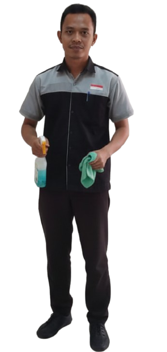

Halo Perkenalkan kami SAG (Surya Abadi Global)
SAG (Surya Abadi Global) merupakan Perusahaan Penyedia Jasa Pekerja (PPJP) yang bergerak pada layanan kebersihan & kemanan sejak tahun 2023. Sebagai perusahaan yang penuh semangat untuk selalu bertumbuh. SAG berusaha untuk terus berinovasi dalam mengembangkan sistem operasional dan peningkatan standar kualitas tenaga kerja melalui integrasi teknologi sistem informasi, penelitian & analisa kebutuhan pengguna serta program pengembangan karyawan yang komprehensif sesuai bidang pekerjaan yang anda butuhkan. Apa yang saat ini tengah dibangun SAG adalah bentuk komitmen kami untuk memenuhi tenaga kerja profesional dengan standar kualitas layanan prima bagi kebutuhan anda, karena SAG peduli.
Build the Best Team
dengan SDM yang kompeten dengan Standar Kompetensi Kerja Nasional Indonesia (SKKNI).
Improvement
Selalu berinovasi dan memberikan yang terbaik dalam setiap pekerjaan.
Transparency
Mengedepankan kejujuran, disiplin, dan bertanggung jawab.
Service Oriented
Pengutamaan pelayanan yang efektif dan efisien sesuai kebutuhan pelanggan.
Tujuan SAG
Menjadi perusahaan penyedia jasa pekerja di bidang kebersihan & pengamanan yang terkemuka dan terpercaya di Indonesia, membangun kemitraan strategis dan solusi inovatif untuk mendorong pertumbuhan dan keunggulan bisnis klien, agar anda dapat tumbuh besar dengan layanan prima kami.

Strategi Pencapaian SAG
Selalu berinovasi dalam pengembangan layanan yang solutif agar dapat memberikan layanan yang terpercaya, reliabel serta mampu membangun portofolio manajemen yang berintegritas dalam peningkatan kualitas tenaga kerja yang profesional guna memberikan layanan prima kepada pengguna sebagai fokus utama.
Kenapa Harus Memilih SAG?
Supervisi Area 24 Jam
Prosedur Keamanan Kerja
Penggunaan Alat & Material Tepat
Industri
Berbagai industri yang SAG layani.